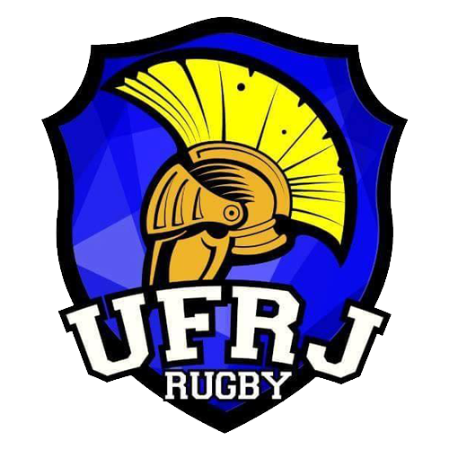

Liga de Rugby Universitário de 2018 - Masculino
O Torneio Masculino da Liga de Rugby Universitário de 2018 foi a competição de rugby football disputada por times universitários masculinos durante todo o ano de 2018. Resende, Ilha do Fundão e Niterói - Campus Gragoatá foram as sedes dos 4º, 5º e 6º Torneios da Liga de Rugby Universitário, que funcionaram pela primeira vez sob o formato de circuito, indicando no final do ano um campeão geral.
Clubes Participantes
UERJ, UFRJ, Rural e UFF foram as equipes universitárias que competiram pelo título e jogaram todas as etapas. O projetos sociais Avá Etê Integração de Itatiaia e UMRio/ONERio de Niterói e a universidade UniFOA participaram como convidados. Ainda, na última etapa do ano, a equipe da UFF apresentou em campo uma equipe de segundos quadros.
 |
 |  |
 |
 |
|---|---|---|---|---|
| UERJ | UFRJ | Rural | UFF | Avá Etê Integração |
| Rio de Janeiro, RJ | Rio de Janeiro, RJ | Seropédica, RJ | Niterói, RJ | Itatiaia, RJ |
 |
||||
| UMRio | UniFOA | |||
| Niterói, RJ | Volta Redonda, RJ |
Etapas
Como primeiro ano do novo formato, as três etapas do ano de 2018 ainda receberam nomes de acordo com a antiga numeração da competição. Assim, a primeira etapa ocorrida no Estádio do Trabalhador em Resende fora o 4º Torneio da Liga de Rugby Universitário; a segunda etapa ocorrida no Campo B da Prefeitura Universitária da Ilha do Fundão fora o 5º Torneio da Liga de Rugby Universitário; e a última ocorrida no Campus Gragoatá da UFF fora o 6º Torneio da Liga de Rugby Universitário.
| Etapa | Lugar | Data | Campeão |
|---|---|---|---|
| I | Resende | 24 de Junho de 2018 | Avá Etê Integração |
| II | Ilha do Fundão | 6 de Outubro de 2018 | UMRio |
| III | Gragoatá | 15 de Dezembro de 2018 | UMRio |
Classificação Final
Após o fim das três etapas, a UFF foi declarada campeã geral, ficando a UFRJ com a segunda posição. A equipe da UERJ disputou as três etapas do ano como convidada, em razão de não conseguir cumprir os limites de inscrição impostos aos atletas universitários.
| Posição | Clube | Resende | Ilha do Fundão | Gragoatá | Pontuação Final |
|---|---|---|---|---|---|
| 1º | UFF | 17 | 26 | 26 | 69 |
| 2º | UFRJ | 23 | 23 | 20 | 66 |
| 3º | Rural | 15 | 17 | 17 | 49 |
| 4º | UERJ | 10* | 10* | 10* | 30 |
Sumário das Posições
A equipe da UFF ficou na segunda posição em razão de seus dois vice-campeonatos nas etapas. A UFRJ pontuou com frequência, ficando entre os quatro primeiros em todas as etapas. A Rural, muito embora não tenha ficado entre as quatro primeira posições durante toda a competição, juntou mais pontos de participação do que a UERJ que apenas pontuou como convidada em todas as etapas.
| Clube | Campeão | Vice-Campeão | Terceiro Lugar | Quarto Lugar |
|---|---|---|---|---|
| UFF | 0 | 2 | 0 | 0 |
| UFRJ | 0 | 0 | 2 | 1 |
| Rural | 0 | 0 | 0 | 0 |
| UERJ | 0 | 1* | 1* | 0 |
Elencos
Os elencos das equipes universitárias são compostos por estudantes de graduação e pós-graduação das referidas instituições, havendo cotas limitadas para ex-alunos e alunos de outras instituições. Os projetos sociais participantes contaram com jovens futuros universitários, participantes de suas atividades, suportados por atletas de clubes federados do Estado.
| UERJ Rugby | ||
|---|---|---|
| Nome | Jogos | Pontos |
| André Leite | 8 | 0 |
| Arthur de Melo | 4 | 0 |
| Bruno Campos | 6 | 0 |
| Bruno Machado | 1 | 0 |
| Bruno Santos | 4 | 0 |
| Clayton Vaneli | 4 | 7 |
| Dayan Oliveira | 4 | 0 |
| Erik Cunha | 12 | 14 |
| Fábio Aguiar | 7 | 0 |
| Hugo Cruz | 3 | 10 |
| Igor Rocco | 7 | 23 |
| Karl Menusier | 4 | 0 |
| Léo Perez | 4 | 0 |
| Leonardo Novello | 2 | 0 |
| Luã Reis | 3 | 5 |
| Lucas Nocera | 4 | 5 |
| Marco Damele | 6 | 0 |
| Octávio Sodré | 12 | 5 |
| Patrick Mesquita | 6 | 7 |
| Rodrigo Quintanilha | 3 | 0 |
| Victor Boscarino | 2 | 0 |
| Werther de Moraes | 4 | 0 |
| Yuri Faria | 9 | 10 |
| UFRJ Rugby | ||
|---|---|---|
| Nome | Jogos | Pontos |
| Augusto Korukian | 3 | 0 |
| Daniel Orlandi | 5 | 10 |
| Denildo Vidal | 6 | 30 |
| Fillippe Lemos | 5 | 15 |
| Francis Amora | 4 | 0 |
| Hélio Gonçalves | 2 | 0 |
| João Batista | 1 | 0 |
| Lucas Guimarães | 4 | 0 |
| Lucas Macedo | 4 | 15 |
| Lucca Marques | 9 | 15 |
| Marco Chiri | 12 | 56 |
| Marcus Vinicius Dantas | 6 | 5 |
| Matheus Guimarães | 4 | 0 |
| Pedro Henrique Araújo | 9 | 0 |
| Rafael Silva | 11 | 10 |
| Rômulo Leão | 4 | 0 |
| Tawa Chan | 11 | 15 |
| Victor Torres | 6 | 10 |
| Wallace Ramos | 1 | 0 |
| Rural Rugby | ||
|---|---|---|
| Nome | Jogos | Pontos |
| Alberto Abib | 4 | 0 |
| Breno Gabriel Santos | 10 | 60 |
| Brieuc Jacques | 6 | 2 |
| Carlos Felipe Cunha | 10 | 10 |
| Gabriel Moreira | 11 | 11 |
| Gabriel Cyrino | 7 | 5 |
| Guilherme Rosa | 5 | 0 |
| Gustavo César França | 8 | 20 |
| Igor Freitas | 3 | 5 |
| João Pedro Canuto | 12 | 47 |
| Kaique de Sousa | 4 | 0 |
| Nathan Munis | 12 | 20 |
| Nikolas Soares | 4 | 12 |
| Renato Claro Dias | 6 | 5 |
| Rodolfo Carvalho | 4 | 5 |
| Sidines Silva | 3 | 10 |
| Yan Costa Ornellas | 1 | 0 |
| UFF Rugby | ||
|---|---|---|
| Nome | Jogos | Pontos |
| André Vilaça | 8 | 10 |
| Bernardo Peluso | 9 | 0 |
| Bruno Mira | 4 | 5 |
| Carlos Borba | 11 | 32 |
| César Fernandes | 7 | 15 |
| Daniel Talyuli | 6 | 25 |
| Eduardo Seiji Tsumori | 7 | 2 |
| Felipe Faria | 1 | 0 |
| Glauber Medina | 4 | 7 |
| Hélder Volpato | 6 | 0 |
| Henrique Platais | 4 | 23 |
| Icaro de Carvalho | 4 | 37 |
| Lucas Meireles | 4 | 5 |
| Luiz Felipe Santos | 11 | 15 |
| Manoel Francisco dos Santos | 10 | 0 |
| Martim Bercoyte | 9 | 15 |
| Pedro Ivo Soares | 4 | 0 |
| Rafael Talyuli | 7 | 0 |
| Thiago Augusto | 2 | 0 |
| Victor Hugo Saraiva | 1 | 5 |
| Wellerson Costa | 3 | 5 |
| Avá Etê Integração | ||
|---|---|---|
| Nome | Jogos | Pontos |
| Eliel da Silva | 1 | 0 |
| Flávio Victor Santos | 4 | 27 |
| Gustavo Silva | 4 | 7 |
| Jackson Oliveira | 4 | 6 |
| João Victor | 4 | 52 |
| Leônidas da Silva | 4 | 0 |
| Lucas Anjos | 4 | 5 |
| Lucas Silva | 4 | 5 |
| Luis Felipe de Oliveira | 4 | 0 |
| Luiz Fernando dos Santos | 4 | 0 |
| Rosendo Junior | 4 | 0 |
| UMRio | ||
|---|---|---|
| Nome | Jogos | Pontos |
| Brenno Pereira | 10 | 15 |
| Caio Damacena | 8 | 15 |
| Claudio Guilherme | 1 | 0 |
| Daniel Gregg | 4 | 32 |
| David Grael | 4 | 37 |
| Ivan Silva Stilinski | 0 | 0 |
| Júlio César Figalo | 3 | 5 |
| Levi Aquino | 10 | 0 |
| Lucas Aquino | 12 | 37 |
| Maicon Paixão | 3 | 25 |
| Marcos Paixão | 8 | 32 |
| Matheus Moreira | 3 | 0 |
| Matheus Nascymento | 12 | 20 |
| Matheus Oliveira | 4 | 5 |
| Matheus Silva | 4 | 10 |
| Maxmillian Paixão | 3 | 0 |
| Robert Malengreau | 2 | 5 |
| Robledo Veiga | 10 | 32 |
| Rodrigo Luiz Amorim | 4 | 0 |
| Rony Silva | 2 | 0 |
| Wendell Damaceno | 9 | 15 |
| UniFOA | ||
|---|---|---|
| Nome | Jogos | Pontos |
| Anderson Freitas | 4 | 0 |
| Cedric Malvão | 4 | 0 |
| Daniel Justo | 4 | 0 |
| Diller Nogueira | 4 | 0 |
| Diogo Mendonça | 4 | 0 |
| Mateus Gomes | 4 | 0 |
| Pedro da Silva | 4 | 10 |
| Vinicius Guedes | 4 | 0 |
| UFF B | ||
|---|---|---|
| Nome | Jogos | Pontos |
| Guilherme Bandeira | - | 0 |
| Guilherme Mango | - | 0 |
| Luis Felipe Mota | - | 0 |
| Lucas Lanari | - | 5 |
| Luiz Eduardo Simões | - | 0 |
| Mauro Gonzalez | - | 0 |
| Pietro Rosário | - | 0 |
| Randolpho Tenório | - | 0 |
| Thiago Augusto | - | 0 |
| Vinicius Valverde | - | 0 |
Jogadores
Maiores Pontuadores
| Rank | Jogador | Pontos |
|---|---|---|
| 1 | Breno Gabriel Santos (Rural) | 60 |
| 2 | Marco Chiri (UFRJ) | 56 |
| 3 | João Victor (Avá Etê Integração) | 52 |
| 4 | João Pedro Canuto (Rural) | 47 |
| 5 | Ícaro de Carvalho (UFF) | 39 |
| 6 | David Grael (UMRio), Lucas Aquino (UMRio) | 37 |
| 7 | Carlos Borba (UFF), Daniel Gregg (UMRio), Robledo Veiga (UMRio), Marcos Paixão (UMRio) | 32 |
| 8 | Denildo Vidal (UFRJ) | 30 |
| 9 | Flávio Victor Santos (Avá Etê Integração) | 27 |
| 10 | Daniel Talyuli (UFF), Maicon Paixão (UMRio) | 25 |
| 11 | Igor Rocco (UERJ), Henrique Platais (UFF) | 23 |
| 12 | Gustavo Cesar França (Rural), Nathan Munis (Rural), Matheus Nascymento (UMRio) | 20 |
| 13 | Filippe Lemos (UFRJ), Lucca Marques (UFRJ), Lucas Macedo (UFRJ), Tawa Chan (UFRJ), César Fernandes (UFF), Luiz Felipe Santos (UFF), Martim Bercovyte (UFF), Brenno Pereira (UMRio), Caio Damacena (UMRio), Wendell Damaceno (UMRio) | 15 |
| 14 | Erik Cunha (UERJ) | 14 |
| 15 | Nikolas Soares (Rural) | 12 |
| 16 | Gabriel Moreira (Rural) | 11 |
| Yuri Faria (UERJ), Hugo Maia (UERJ), Daniel Orlandi (UFRJ), Victor Torres (UFRJ), Rafael Silva (UFRJ), Sidines Silva (Rural), Carlos Felipe Cunha (Rural), André Vilaça (UFF), Matheus Silva (UMRio), Pedro da Silva (UniFOA) | 10 | |
| Patrick Mesquita (UERJ), Clayton Vaneli (UERJ), Glauber Medina (UFF), Gustavo Silva (Avá Etê Integração) | 7 | |
| Jackson Oliveira (Avá Etê Integração) | 6 | |
| Luã Reis (UERJ), Lucas Nocera (UERJ), Octávio Sodré (UERJ), Marcus Vinicius Dantas (UFRJ), Igor Freitas (Rural), Rodolfo Carvalho (Rural), Gabriel Cyrino (Rural), Bruno Mira (UFF), Lucas Meireles (UFF), Victor Hugo Saraiva (UFF), Wellerson Costa (UFF), Lucas Silva (Avá Etê Integração), Lucas Anjos (Avá Etê Integração), Júlio César Figalo (UMRio), Matheus Oliveira (UMRio), Robert Malengreau (UMRio), Lucas Lanari (UFF B) | 5 | |
| Brieuc Jacques (Rural) | 2 |
Tries Marcados
| Rank | Jogador | Tries |
|---|---|---|
| 1 | Breno Gabriel Santos (Rural) | 12 |
| 2 | João Victor (Avá Etê Integração) | 10 |
| 3 | Denildo Vidal (UFRJ), Robledo Veiga (UMRio), Marcos Paixão (UMRio) | 6 |
| 4 | João Pedro Canuto (Rural), Daniel Talyuli (UFF), Ícaro de Carvalho (UFF), Flávio Victor Santos (Avá Etê Integração), Maicon Paixão (UMRio), Lucas Aquino (UMRio) | 5 |
| 5 | Marco Chiri (UFRJ), Gustavo Cesar França (Rural), Nathan Munis (Rural), Carlos Borba (UFF), Matheus Nascymento (UMRio), Daniel Gregg (UMRio) | 4 |
| 6 | Igor Rocco (UERJ), Filippe Lemos (UFRJ), Lucca Marques (UFRJ), Lucas Macedo (UFRJ), Tawa Chan (UFRJ), Henrique Platais (UFF), César Fernandes (UFF), Luiz Felipe Santos (UFF), Martim Bercovyte (UFF), Wendell Damaceno (UMRio), Caio Damacena (UMRio), Brenno Pereira (UMRio), David Grael (UMRio) | 3 |
| 7 | Yuri Faria (UERJ), Erik Cunha (UERJ), Hugo Maia (UERJ), Daniel Orlandi (UFRJ), Victor Torres (UFRJ), Rafael Silva (UFRJ), Sidines Silva (Rural), Nikolas Soares (Rural), Carlos Felipe Cunha (Rural), André Vilaça (UFF), Matheus Silva (UMRio), Pedro da Silva (UniFOA) | 2 |
| 8 | Luã Reis (UERJ), Lucas Nocera (UERJ), Octávio Sodré (UERJ), Patrick Mesquita (UERJ), Clayton Vaneli (UERJ), Marcus Vinicius Dantas (UFRJ), Renato Claro Dias (Rural), Gabriel Cyrino (Rural), Gabriel Moreira (Rural), Rodolfo Carvalho (Rural), Igor Freitas (Rural), Bruno Mira (UFF), Lucas Meireles (UFF), Glauber Medina (UFF), Victor Hugo Saraiva (UFF), Wellerson Costa (UFF), Gustavo Silva (Avá Etê Integração), Lucas Silva (Avá Etê Integração), Lucas Anjos (Avá Etê Integração), Júlio César Figalo (UMRio), Matheus Oliveira (UMRio), Robert Malengreau (UMRio), Lucas Lanari (UFF B) | 1 |
Conversões Marcadas
| Rank | Jogador | Conversões |
|---|---|---|
| 1 | Marco Chiri (UFRJ) | 18 |
| 2 | João Pedro Canuto (Rural), David Grael (UMRio) | 11 |
| 3 | Ícaro de Carvalho (UFF) | 7 |
| 4 | Carlos Borba (UFF), Lucas Aquino (UMRio), Daniel Gregg (UMRio) | 6 |
| 5 | Igor Rocco (UERJ), Henrique Platais (UFF) | 4 |
| 6 | Gabriel Moreira (Rural), Jackson Oliveira (Avá Etê Integração) | 3 |
| 7 | Erik Cunha (UERJ) | 2 |
| Patrick Mesquita (UERJ), Clayton Vaneli (UERJ), Brieuc Jacques (Rural), Nikolas Soares (Rural), Glauber Medina (UFF), João Victor (Avá Etê Integração), Flávio Victor Santos (Avá Etê Integração), Gustavo Silva (Avá Etê Integração), Robledo Veiga (UMRio), Marcos Paixão (UMRio) | 1 |
Penalidades Marcados
| Rank | Jogador | Penalidades |
|---|---|---|
| 1 | (não houve tiros de penalidades marcados durante a competição) | 0 |
Drop Goals Marcados
| Rank | Jogador | Drop Goals |
|---|---|---|
| 1 | (não houve drop goals marcados durante a competição) | 0 |
Resultado dos Jogos
I Etapa - Resende
| Fase de Grupos - Jogo 1 | ||
|---|---|---|
| UERJ 17 x 5 Rural | ||
|
Tries do Time A: Yuri Faria (1), Octávio Sodré (1) e Igor Rocco (1) Conversões do Time A: Igor Rocco (1) Tries do Time B: João Pedro Canuto (1) Conversões do Time B: |
|
| Fase de Grupos - Jogo 2 | ||
|---|---|---|
| UFF 0 x 24 UFRJ | ||
|
Tries do Time A: Conversões do Time A: Tries do Time B: Denildo Vidal (2), Marcus Vinicius Dantas (1), Tawa Chan (1) Conversões do Time B: Marco Chiri (2) |
| Fase de Grupos - Jogo 3 | ||
|---|---|---|
| UMRio 10 x 15 Avá Etê Integração | ||
Tries do Time A: Robert Malengreau (1), Robledo Veiga (1) Conversões do Time A: Tries do Time B: João Victor (3) Conversões do Time B: |
|
| Fase de Grupos - Jogo 6 | ||
|---|---|---|
| UERJ 7 x 7 UFRJ | ||
|
Tries do Time A: Yuri Faria (1) Conversões do Time A: Igor Rocco (1) Tries do Time B: Penalty Try (1) Conversões do Time B: |
| Fase de Grupos - Jogo 7 | ||
|---|---|---|
| UMRio 12 x 14 Rural | ||
Tries do Time A: Robledo Veiga (1), Lucas Aquino (1) Conversões do Time A: Lucas Aquino (1) Tries do Time B: Breno Gabriel Santos (1), Rodolfo Carvalho (1) Conversões do Time B: João Pedro Canuto (2) |
|
| Fase de Grupos - Jogo 8 | ||
|---|---|---|
| UFF 0 x 19 Avá Etê Integração | ||
|
Tries do Time A: Conversões do Time A: Tries do Time B: Flávio Victor dos Santos (2), João Victor (1) Conversões do Time B: Jackson Oliveira (1), João Victor (1) |
|
| Fase de Grupos - Jogo 11 | ||
|---|---|---|
| UMRio 10 x 24 UFRJ | ||
Tries do Time A: Robledo Veiga (1), Brenno Pereira (1) Conversões do Time A: Tries do Time B: Daniel Orlandi (2), Marco Chiri (1), Filippe Lemos (1) Conversões do Time B: Marco Chiri (2) |
| Fase de Grupos - Jogo 12 | ||
|---|---|---|
| UERJ 0 x 39 Avá Etê Integração | ||
|
Tries do Time A: Conversões do Time A: Tries do Time B: João Victor (3), Flávio Victor Santos (2), Lucas Silva (1), Gustavo Silva (1), Conversões do Time B: Jackson Oliveira (1), Lucas Silva (1) |
|
| Fase de Grupos - Jogo 13 | ||
|---|---|---|
| UFF 14 x 17 Rural | ||
|
Tries do Time A: Carlos Borba (1), Penalty Try (1) Conversões do Time A: Glauber Medina (1) Tries do Time B: Breno Gabriel Santos (2), Nathan Munis (1), Conversões do Time B: João Pedro Canuto (2) |
|
| Decisão de 5º e 6º | ||
|---|---|---|
| Rural 7 x 19 UFF | ||
|
Tries do Time A: Breno Gabriel Santos (1) Conversões do Time A: João Pedro Canuto (1) Tries do Time B: Bruno Mira (1), Lucas Meireles (1), Glauber Medina (1) Conversões do Time B: Carlos Borba (2) |
|
| Decisão de 3º e 4º | ||
|---|---|---|
| UFRJ 24 x 7 UmRIO | ||
Tries do Time A: Tawa Chan (1), Lucca Marques (1), Rafael Silva (1), Filippe Lemos (1) Conversões do Time A: Marco Chiri (2) Tries do Time B: Matheus Oliveira (1) Conversões do Time B: Lucas Aquino (1) |
| Final | ||
|---|---|---|
| UERJ 5 x 31 Avá Etê Integração | ||
|
Tries do Time A: Lucas Nocera (1) Conversões do Time A: Tries do Time B: João Victor (3), Lucas Anjos (1), Flávio Victor Santos (1) Conversões do Time B: Jackson Oliveira(1), Gustavo Silva(1), Flávio Victor Santos (1) |
|
II Etapa - Ilha do Fundão
| Fase de Grupos - Jogo 1 | ||
|---|---|---|
| UFRJ 38 x 7 Rural | ||
Tries do Time A: Lucca Marques (2), Lucas Macedo (2), Denildo Vidal (1), Filippe Lemos (1) Conversões do Time A: Marco Chiri (4) Tries do Time B: Breno Gabriel Santos (1) Conversões do Time B: João Pedro Canuto (1) |
|
| Fase de Grupos - Jogo 2 | ||
|---|---|---|
| UFF 38 x 0 UERJ | ||
|
Tries do Time A: Martim Bercovyte (2), Ícaro de Carvalho (1), Carlos Borba (1), Luiz Felipe Santos (1), Penalty Try (1) Conversões do Time A: Ícaro de Carvalho (3) Tries do Time B: Conversões do Time B: |
|
| Fase de Grupos - Jogo 5 | ||
|---|---|---|
| UFRJ 5 x 27 UMRio | ||
Tries do Time A: Denildo Vidal (1) Conversões do Time A: Tries do Time B: Maicon Paixão (2), Robledo Veiga (1), Matheus Silva (1), Brenno Pereira (1) Conversões do Time B: Daniel Gregg (1) |
| Fase de Grupos - Jogo 6 | ||
|---|---|---|
| UFF 38 x 0 UniFOA | ||
|
Tries do Time A: César Fernandes (2), Ícaro de Carvalho (1), Daniel Talyuli (1), Martim Bercovyte (1), Victor Hugo Saraiva (1) Conversões do Time A: Ícaro de Carvalho (4) Tries do Time B: Conversões do Time B: |
|
| Fase de Grupos - Jogo 9 | ||
|---|---|---|
| Rural 5 x 33 UMRio | ||
|
Tries do Time A: Breno Gabriel Santos (1) Conversões do Time A: Tries do Time B: Matheus Silva (1), Robledo Veiga (1), Lucas Aquino (1), Maicon Paixão (1), Marcos Paixão (1) Conversões do Time B: Lucas Aquino (2), Daniel Gregg (1), Marcos Paixão (1) |
| Fase de Grupos - Jogo 10 | ||
|---|---|---|
| UniFOA 10 x 7 UERJ | ||
|
Tries do Time A: Pedro da Silva (2) Conversões do Time A: Tries do Time B: Luã Reis (1) Conversões do Time B: Erik Cunha (1) |
|
| Decisão de 5º e 6º (ida) | ||
|---|---|---|
| Rural 37 x 5 UERJ | ||
|
Tries do Time A: Gustavo César França (3), Breno Gabriel Santos (1), João Pedro Canuto (1), Gabriel Cyrino (1), Renato Claro Dias (1) Conversões do Time A: João Pedro Canuto (1) Tries do Time B: Erik Cunha (1) Conversões do Time B: |
|
| Semifinal A | ||
|---|---|---|
| UMRio 36 x 0 UniFOA | ||
Tries do Time A: Maicon Paixão (2), Marcos Paixão (2), Robledo Veiga (1), Júlio César Figalo (1) Conversões do Time A: Lucas Aquino (2), Daniel Gregg (2) Tries do Time B: Conversões do Time B: |
|
| Semifinal B | ||
|---|---|---|
| UFRJ 0 x 27 UFF | ||
Tries do Time A: Conversões do Time A: Tries do Time B: Ícaro de Carvalho (3), Carlos Borba (1), André Vilaça (1) Conversões do Time B: Carlos Borba (1) |
|
| Decisão de 5º e 6º (volta) | ||
|---|---|---|
| UERJ 0 x 53 Rural | ||
|
Tries do Time A: Conversões do Time A: Tries do Time B: Breno Gabriel Santos (2), Nathan Munis (2), Carlos Felipe Cunha (2), Gustavo César França (1), Gabriel Moreira (1), João Pedro Canuto (1) Conversões do Time B: Gabriel Moreira (3), João Pedro Canuto (1) |
|
| Decisão de 3º e 4º | ||
|---|---|---|
| UniFOA 0 x 38 UFRJ | ||
|
Tries do Time A: Conversões do Time A: Tries do Time B: Denildo Vidal (2), Lucas Macedo (1), Marco Chiri (1), Tawa Chan (1), Victor Torres (1) Conversões do Time B: Marco Chiri (4) |
| Final | ||
|---|---|---|
| UMRio 24 x 7 UFF | ||
Tries do Time A: Daniel Gregg (4) Conversões do Time A: Daniel Gregg (2) Tries do Time B: Daniel Talyuli (1) Conversões do Time B: Carlos Borba (1) |
|
III Etapa - Gragoatá
| Fase de Grupos - Jogo 2 | ||
|---|---|---|
| UFF 5 x 15 UMRio | ||
|
Tries do Time A: Carlos Borba (1) Conversões do Time A: Tries do Time B: Brenno Pereira (1), Marcos Paixão (1), Lucas Aquino (1) Conversões do Time B: |
| Fase de Grupos - Jogo 3 | ||
|---|---|---|
| UFRJ 7 x 5 UERJ | ||
Tries do Time A: Marco Chiri (1) Conversões do Time A: Marco Chiri (1) Tries do Time B: Patrick Mesquita (1) Conversões do Time B: |
|
| Fase de Grupos - Jogo 5 | ||
|---|---|---|
| UMRio 43 x 5 UFF B | ||
Tries do Time A: Matheus Nascymento (3), Lucas Aquino (1), Caio Damacena (1), David Grael (1), Wendell Damaceno (1) Conversões do Time A: David Grael (4) Tries do Time B: Lucas Lanari (1) Conversões do Time B: |
|
| Fase de Grupos - Jogo 6 | ||
|---|---|---|
| Rural 5 x 14 UERJ | ||
|
Tries do Time A: João Pedro Canuto (1) Conversões do Time A: Tries do Time B: Erik Cunha (1), Igor Rocco (1) Conversões do Time B: Patrick Mesquita (1), Igor Rocco (1) |
|
| Fase de Grupos Jogo 8 | ||
|---|---|---|
| UFF 22 x 0 UFF B | ||
|
Tries do Time A: Luiz Felipe Santos (2), César Fernandes (1), Wellerson Costa (1) Conversões do Time A: Carlos Borba (1) Tries do Time B: Conversões do Time B: |
|
| Fase de Grupos - Jogo 9 | ||
|---|---|---|
| UFRJ 14 x 7 Rural | ||
Tries do Time A: Victor Torres (1), Rafael Silva (1) Conversões do Time A: Marco Chiri (2) Tries do Time B: Sidines Silva (1) Conversões do Time B: João Pedro Canuto (1) |
|
| Disputa de 5º e 6º (ida) | ||
|---|---|---|
| UFF B 0 x 24 Rural | ||
|
Tries do Time A: Conversões do Time A: Tries do Time B: Nikolas Soares (2), João Pedro Canuto (1), Breno Gabriel Santos (1) Conversões do Time B: João Pedro Canuto (2) |
|
| Semifinal A | ||
|---|---|---|
| UMRio 45 x 0 UERJ | ||
Tries do Time A: Marcos Paixão (2), Caio Damacena (2), Wendell Damaceno (2), Matheus Nascymento (1) Conversões do Time A: David Grael (4), Robledo Veiga (1) Tries do Time B: Conversões do Time B: |
|
| Semifinal B | ||
|---|---|---|
| UFF 31 x 0 UFRJ | ||
|
Tries do Time A: Henrique Platais (2), Daniel Talyuli (2), André Vilaça (1) Conversões do Time A: Henrique Platais (3) Tries do Time B: Conversões do Time B: |
| Disputa de 5º e 6º (volta) | ||
|---|---|---|
| Rural 29 x 0 UFF B | ||
|
Tries do Time A: Breno Gabriel Santos (2), Igor Freitas (1), Sidines Silva (1), Nathan Munis (1) Conversões do Time A: Brieuc Jacques (1), Nikolas Soares (1) Tries do Time B: Conversões do Time B: |
|
| Disputa de 3º e 4º | ||
|---|---|---|
| UFRJ 7 x 26 UERJ | ||
Tries do Time A: Marco Chiri (1) Conversões do Time A: Marco Chiri (1) Tries do Time B: Hugo Cruz (2), Igor Rocco (1), Clayton Vaneli (1) Conversões do Time B: Igor Rocco (1), Clayton Vaneli (1), Erik Cunha (1) |
|
| Final | ||
|---|---|---|
| UMRio 21 x 14 UFF | ||
Tries do Time A: David Grael (2), Lucas Aquino (1) Conversões do Time A: David Grael (3) Tries do Time B: Henrique Platais (1), Daniel Talyuli (1) Conversões do Time B: Carlos Borba (1), Henrique Platais (1) |
|